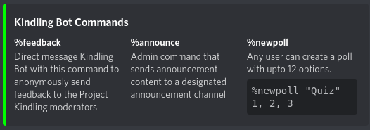
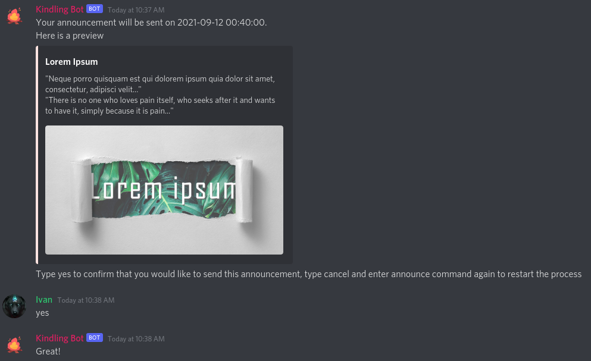
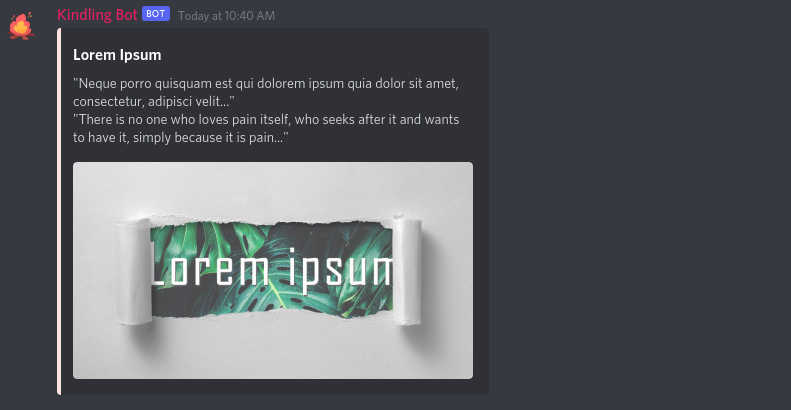
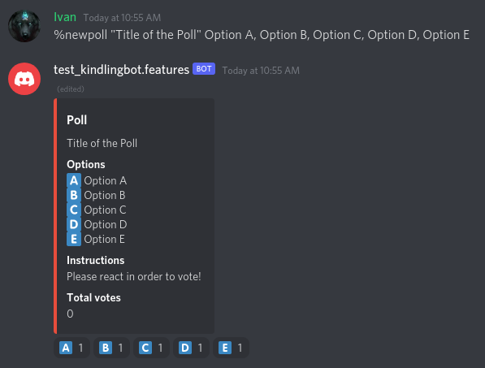
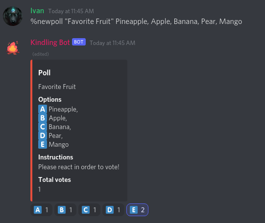

Using the Kingling Bot
Table of Contents
1. Command Prefix
The prefix for running commands for the Kindling Bot is %.
2. Help Command
Using the %help command will output the list of available commands and how to
use them.
%help

3. Announce Command
Using the %announce command, administrators can schedule announcement ahead
of time. The scheduled announcements are made in our server’s
# announcements channel. To stop the announcement process at any time,
type cancel.
%announce
Using the
%announcecommandType in the title of your announcement

Type in the content of your announcement

Enter when the announcement will be posted

- Mention if you want to add an image to your announcement
If you want to add an image to your announcement

If you don’t want to add an image to tour announcement
- Confirm your announcement’s title, contents, and schedule
If no picture was added

If picture was added

- The announcement will be made in its designated channel in due time.
If no picture was added

If picture was added

4. Poll Command
Using the %newpoll command administrators can starting a poll with a
maximum of 12 options. Other users can react to the poll to cast a vote.
The first set of reactions will be generated automatically.
%newpoll
Creating a new poll

The
Total Votescount will update with each vote cast